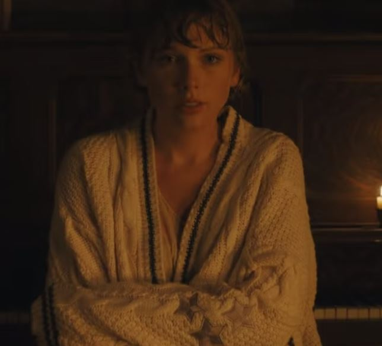

The Folklore Love Triangle

The story behind Cardigan
The song Cardigan is from the perspective of Betty. She sings about how she already knew that James
was cheating on her even tho he thought shse didnt know. She then goes on to sing about how she felt
like a used cardigan impling how she felt throw aside for something new. She then continues to sing about
how James spent the weekends with her but secretly spent all his other time with Augusta. After that she
sings about how badly James hurt her and how he kept making it worse without him knowing it. At the end of
the song she sings about how she knew that James would come back to her after all he had done. And at the
end she talks about how it made her feel just like how she felt when she first found out and how James acted
as if everything was fine.
Lyrics
Vintage tee, brand new phone
High heels on cobblestones
When you are young, they assume you know nothing
Sequin smile, black lipstick
Sensual politics
When you are young, they assume you know nothing
But I knew you
Dancin' in your Levi's
Drunk under a streetlight, I
I knew you
Hand under my sweatshirt
Baby, kiss it better, I
And when I felt like I was an old cardigan
Under someone's bed
you put me on and said I was your favorite
A friend to all is a friend to none
Chase two girls, lose the one
When you are young, they assume you know nothin'
But I knew you
Playing hide-and-seek and
Giving me your weekends, I
I knew you
Your heartbeat on the High Line
Once in 20 lifetimes, I
And when I felt like I was an old cardigan
Under someone's bed
You put me on and said I was your favorite
To kiss in cars and downtown bars
Was all we needed
You drew stars around my scars
But now I'm bleedin'
'Cause I knew you
Steppin' on the last train
Marked me like a bloodstain, I
I knew you
Tried to change the ending
Peter losing Wendy, I
I knew you
Leavin' like a father
Running like water, I
And when you are young, they assume you know nothing
But I knew you'd linger like a tattoo kiss
I knew you'd haunt all of my what-ifs
The smell of smoke would hang around this long
'Cause I knew everything when I was young
I knew I'd curse you for the longest time
Chasin' shadows in the grocery line
I knew you'd miss me once the thrill expired
And you'd be standin' in my front porch light
And I knew you'd come back to me
You'd come back to me
And you'd come back to me
And you'd come back
And when I felt like I was an old cardigan
Under someone's bed
You put me on and said I was your favorite